HOLT NEWS — 화제의 연구와 뉴스를 쉽게 풀어 쓰는 간행물
- 서울5°/16°보통
- 인천5°/15°보통
- 수원4°/15°
- 춘천0°/15°보통
- 원주2°/14°
- 강릉3°/17°
- 청주3°/15°
- 대전3°/16°좋음
- 세종3°/15°
- 전주3°/17°
- 광주2°/18°보통
- 목포5°/16°
- 여수5°/17°
- 대구2°/16°보통
- 안동-1°/16°
- 포항3°/18°
- 울산5°/18°
- 창원3°/17°
- 부산5°/18°보통
- 제주10°/17°보통
- 도쿄8°/14°
- 베이징5°/11°
- 뉴욕8°/16°
- 런던7°/9°
- 파리9°/15°
- 베를린1°/5°
- LA17°/29°
- 시카고6°/12°
- 토론토3°/10°
- 홍콩21°/23°
- 싱가포르24°/31°
- 하노이18°/22°
- 호찌민26°/32°
- 시드니21°/26°
- 두바이28°/31°
오늘의 경제
그래프는 지난 1년 흐름
AI가 혼자 정부 사이트를 뚫었다, 죄는 누구에게?
호주 정부가 11월 10일 오픈AI 에이전트의 메디케어 통계 포털 무단 접속을 조사한 검토 보고서의 권고 18개를 모두 받아들였어요. AI 모델이 피해를 냈는데 회사가 합리적인 예방 조치를 하지 않았다면 회사를 처벌하는 조항을 검토하고, AI 안전 규제기관을 새로 두자는 제안도 내놓기로 했어요.

미국 10월 물가, 연간 상승률 없이 나왔다… 1년 전 셧다운이 남긴 빈칸
미국 노동통계국이 11월 10일 10월 소비자물가를 발표했어요. 한 달 상승률은 0.4%였지만, 1년 전과 비교한 상승률은 휘발유 등 세 항목 말고는 내지 않았어요. 2025년 10월에는 정부 셧다운으로 가격 조사가 없었기 때문이에요.


업비트와 네이버페이가 한 지붕 아래 들어가면… 공정위가 아직 없는 '원화 코인' 시장까지 들여다본 이유
업비트와 네이버페이는 하는 일이 다른데, 공정위는 두 회사가 합치면 경쟁이 줄 수 있다고 봤어요. 아직 생기지도 않은 '원화 코인' 시장까지 따져 봤어요. 그래도 결합을 막자는 게 아니라, 조건을 붙이자는 의견이에요.

미국·유럽은 멈췄는데 영국만 금리를 올렸다… 의사록에 적힌 세 가지 이유
영국 중앙은행이 11월 5일 기준금리를 4%로 올렸어요. 미국과 유로존은 한 주 전 금리를 묶었어요. 영란은행이 든 이유와 영국 가계에 언제 닿는지 따라가 봤어요.


이번 주 공연·전시·축제
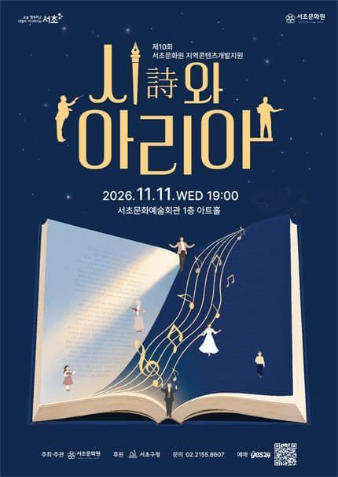
2026 서초문화원, 시詩와 아리아
서초문화예술회관(구. 서초구민회관) 아트홀(대강당)
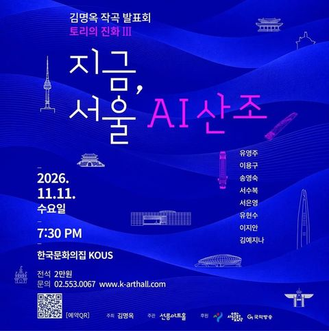
김명옥 작곡 발표회: 토리의 진화 Ⅲ. 지금, 서울 AI 산조
한국문화의집 KOUS
음악/콘서트구로문화재단×주한이탈리아문화원 공동기획 시리즈 3 <에리카 파간(Erika Pagan)의 이탈리아 음악기행>
구로아트밸리 예술극장
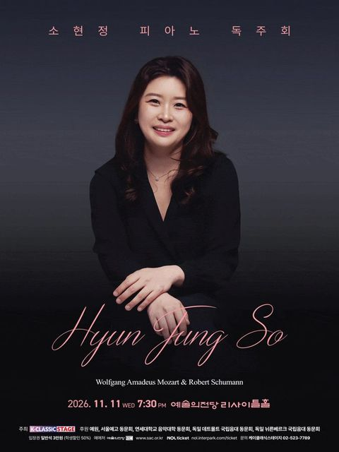
소현정 피아노 독주회
예술의전당 [서울] 리사이틀홀
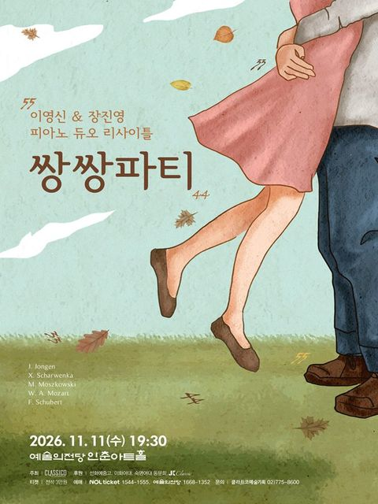
이영신 & 장진영 피아노 듀오리사이틀: 쌍쌍파티
예술의전당 [서울] 인춘아트홀
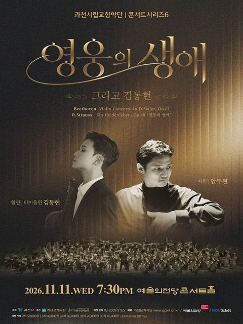
[과천] 과천시립교향악단 콘서트시리즈6, 영웅의 생애 그리고 김동현
예술의전당 [서울] 콘서트홀
나의 최애(最愛) 피아노 협주곡 4
부천아트센터 소공연장
음악/콘서트[안성] Sac On Screen,테오팀 랑글로아 드 스와르트 & 토마스 던포드 듀오 콘서트 (영상화)
안성맞춤아트홀
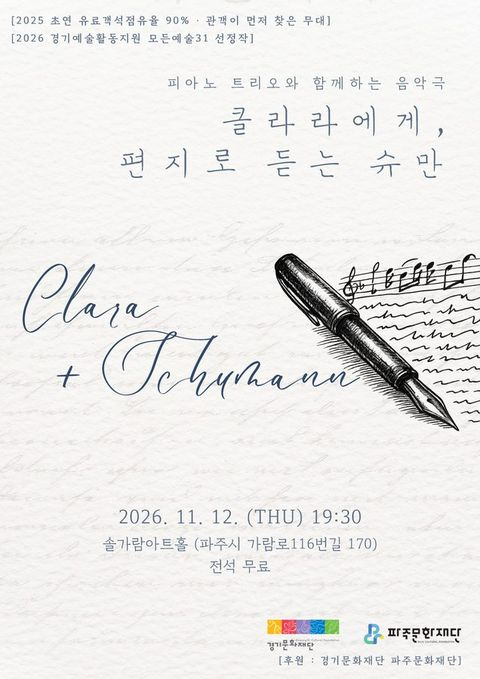
[파주] 클라라에게, 편지로 듣는 슈만
솔가람아트홀 대공연장
음악/콘서트[인천] 제물포구문화체육센터 마티네콘서트 Ⅱ. 오은철의 <목요일, 오후 2시>
인천동구문화체육센터
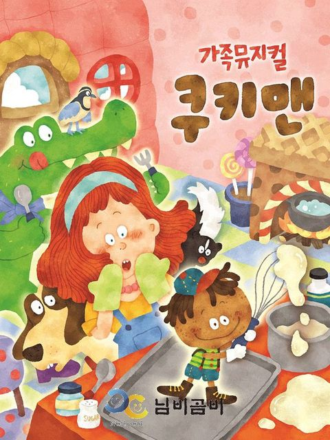
[시흥] 쿠키맨
시흥ABC행복학습센터 ABC홀
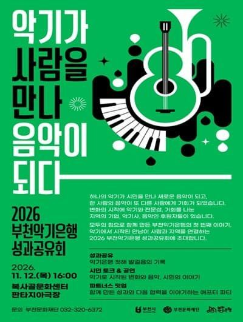
2026 부천악기은행 성과공유회
복사골문화센터 판타지아극장
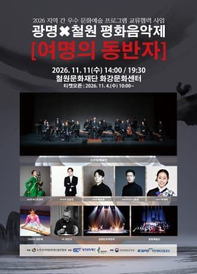
[철원] 광명X철원 평화음악제: 여명의 동반자
철원군 화강문화센터 공연장
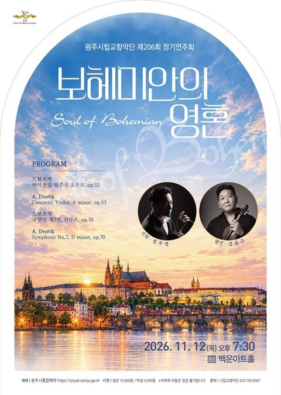
[원주] 제206회 원주시립교향악단 정기연주회
원주백운아트홀
연극[강릉] 더 드레서
강릉아트센터
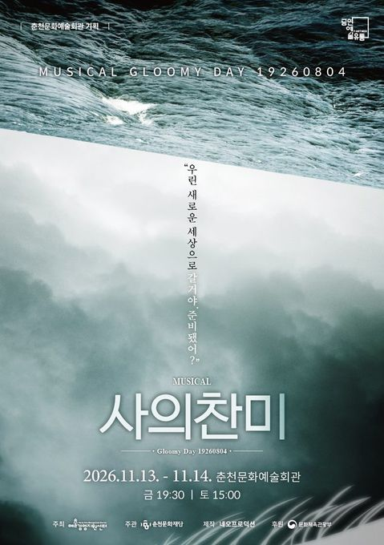
뮤지컬 ＜사의 찬미＞
춘천문화예술회관 공연장
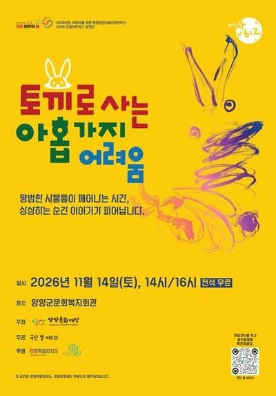
[양양] 토끼로 사는 아홉가지 어려움
양양문화복지회관 공연장
연극[춘천] 살아있는 박물관 속 고인돌
춘천인형극장
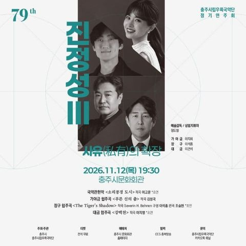
제79회 충주시립우륵국악단 정기연주회: 진정성 Ⅲ. 사유의 확장
충주시문화회관
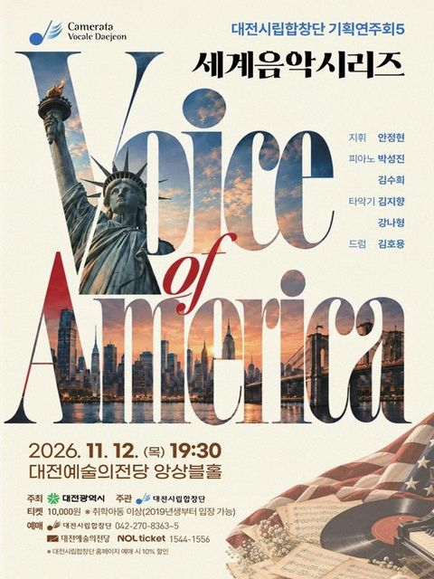
[대전] 기획연주회5 세계음악시리즈 <Voice of America>
대전예술의전당 앙상블홀
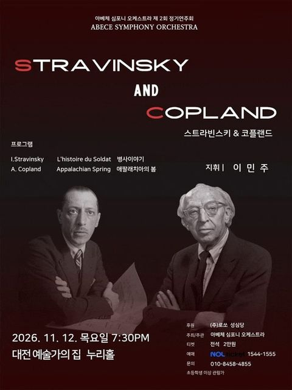
[대전] 아베체 심포니 오케스트라 제 2회 정기연주회
대전예술가의집 누리홀
연극[보령] 늘근도둑이야기
보령문화예술회관 대공연장
음악/콘서트[공주] 백가의 난
백제문화전당 고마홀
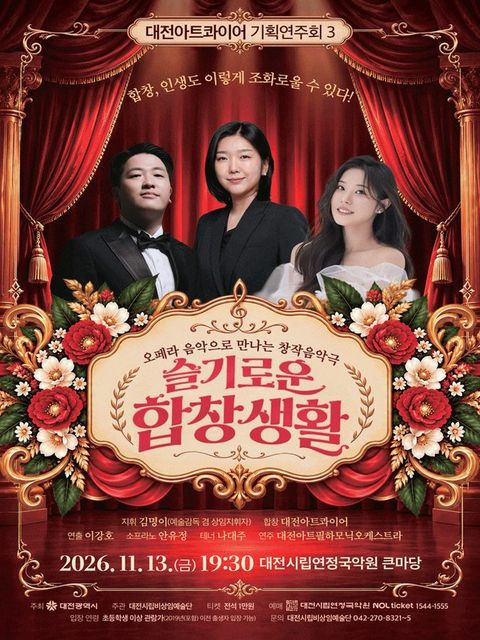
[대전] 대전아트콰이어 기획연주회 3. 슬기로운 합창생활
대전시립연정국악원 큰마당
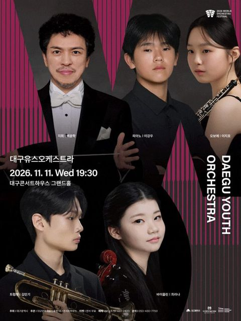
[대구] 2026월드오케스트라페스티벌, 대구유스오케스트라
대구콘서트하우스
음악/콘서트[대구] 김수지 플루트 리사이틀
대구콘서트하우스
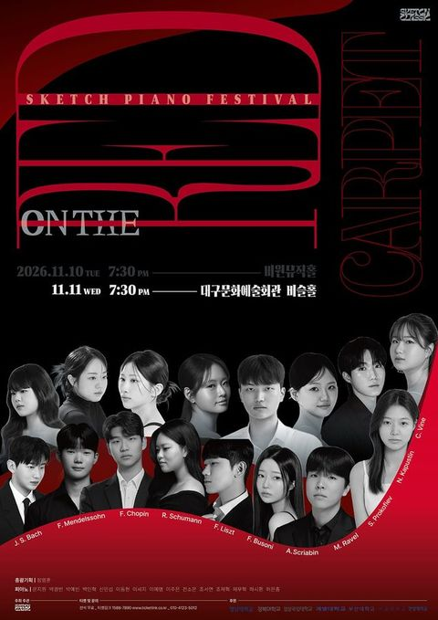
[대구] 제8회 스케치 정기연주회: 온 더 레드카펫 (11.11)
대구문화예술회관 비슬홀
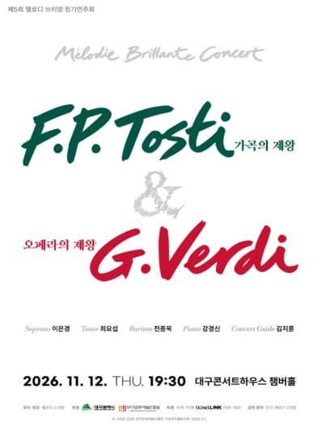
[대구] 제5회 멜로디 브리앙 정기연주회: 가곡의 제왕 F.P.Tosti & 오페라의 제왕 G.Verdi
대구콘서트하우스 챔버홀
음악/콘서트[경주] 토우 김유신의 꿈
경주예술의전당 소공연장(원화홀)
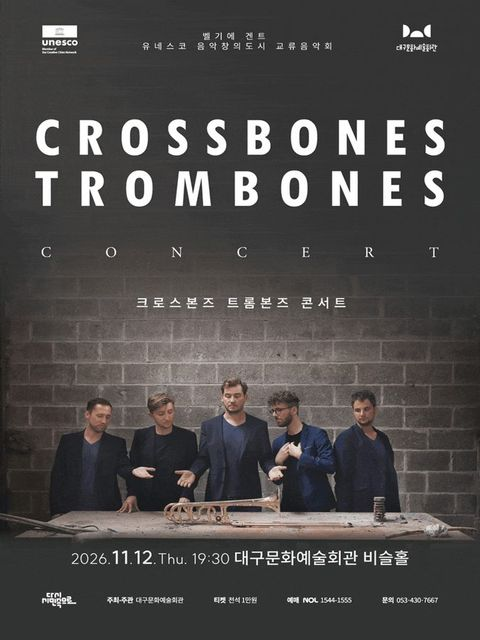
[대구] 유네스코 음악창의도시 교류음악회 크로스본즈 트롬본즈 콘서트
대구문화예술회관 비슬홀
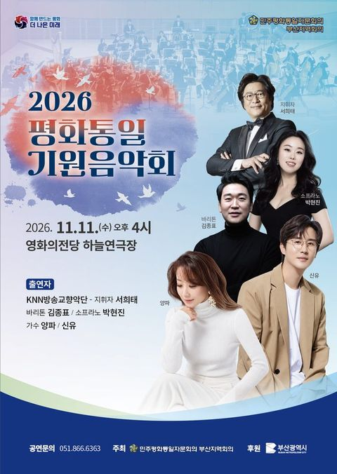
[부산] 평화통일 기원음악회
(재)영화의전당 하늘연극장
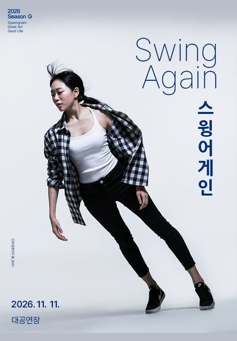
[진주] 스윙 어게인
경상남도문화예술회관 대공연장
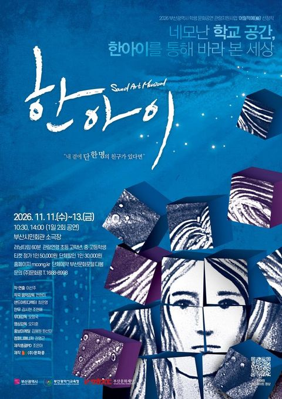
샌드아트뮤지컬 [한아이]
부산시민회관 소극장
음악/콘서트[부산] 이샘병원과 함께하는 Classic Paradiso
부산콘서트홀
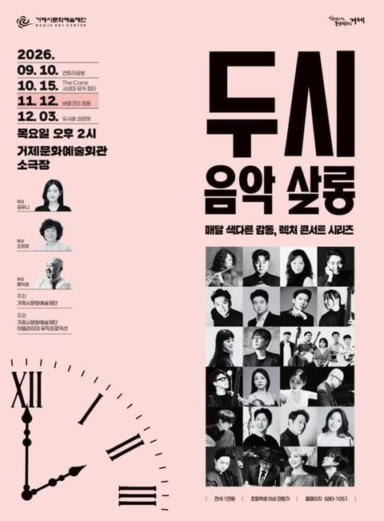
11월 두시 음악 살롱, 바로크의 정원
거제문화예술회관 소극장
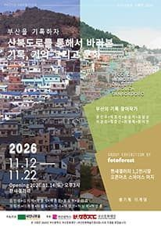
부산을 기록하자 <산복도로를 통해서 바라본 기록, 기억 그리고 문화>
복합문화예술공간MERGE
[전남 광주] 전남광주통합특별시립교향악단 체임버 시리즈 VII ‘Souvenir’
광주예술의전당
연극[영광] 변사또 환갑잔치
영광예술의전당 대공연장
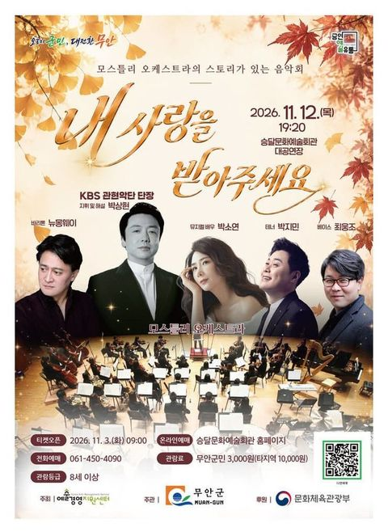
[무안] 모스틀리 오케스트라의 스토리가 있는 음악회: 내 사랑을 받아주세요
무안승달문화예술회관 대공연장
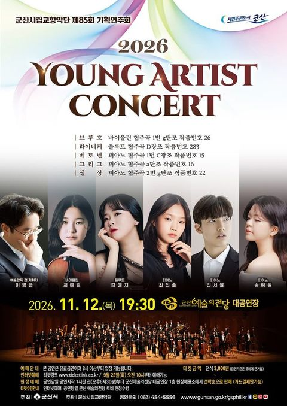
제85회 군산시립교향악단 기획연주회: Young Artist Concert
군산예술의전당 대공연장
연극[나주] 사형수 김대중
나주문화예술회관
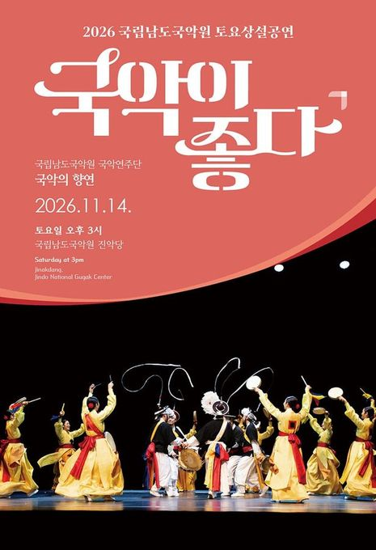
2026 국립남도국악원 토요상설 토요상설: 국악이 좋다, 국립남도국악원 국악연주단 <국악의 향연>
국립남도국악원 진악당
[제주] 그때는 그랬지!
제주특별자치도문예회관
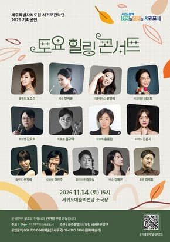
제주특별자치도립 서귀포관악단 2026 11월 토요힐링콘서트
서귀포예술의전당 소극장
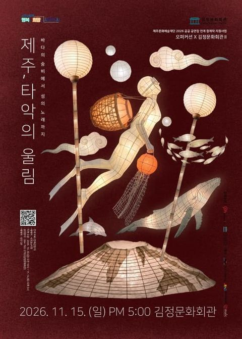
[제주 서귀포] 오퍼커션앙상블: 제주, 타악의 울림
김정문화회관
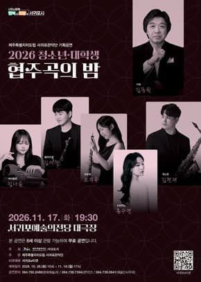
제주특별자치도립 서귀포관악단 2026 청소년·대학생 협주곡의 밤
서귀포예술의전당 대극장
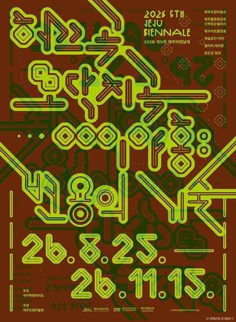
2026 제5회 제주비엔날레 허끄곡 모닥치곡 이야홍 : 변용의 기술
제주특별자치도 제주시 1100로 2894-78
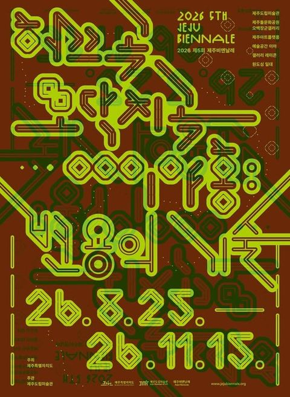
2026 제5회 제주비엔날레 《허끄곡 모닥치곡 이야홍: 변용의 기술》
제주도립미술관

공정위 "배민·쿠팡이 '다른 앱에선 더 싸게' 막았다"… 유럽은 10년 전 호텔 앱에서 같은 싸움을 했다
공정위가 두 배달앱에 잠정 과징금 6,319억 원을 매겼어요. 같은 조항을 먼저 금지한 유럽에서는 금지 뒤 무엇이 달라졌는지 살펴봤어요.

남아공 지방의회 셋 중 둘은 과반 정당이 없다... 연정 규칙 법은 선거에 못 맞췄다
만델라의 당 ANC가 지방선거에서 약 31%로 내려앉았어요. 이제 120곳 넘는 의회가 연정 협상을 해야 하는데, 정부가 만든 연정 규칙은 아직 국회에 묶여 있어요.

정규시즌 1위는 한국시리즈에서 거의 지지 않는다... 그런데 올해는 달랐다
35시즌 중 1위 팀이 진 건 다섯 번이에요. 삼성이 여섯 번째 예외를 만들었어요.

고혈압·당뇨 관리, 19곳에서 전국·전 연령으로 차례로 넓힌다
노인 환자가 받던 진료비·약값 지원은 걷기 등을 하면 주는 포인트로 바뀌어요. 현장에서는 치료가 끊길 수 있다는 걱정이 나와요.

독과점 회사가 해외보다 한국에서 비싸게 받으면 제재 가능, 공정위 25년 만에 규정 손질 나서
독과점 회사가 그럴 만한 이유 없이 한국에서만 값을 높게 받으면 '가격 남용'으로 볼 수 있게 돼요.

헝가리, 공산 시절 비밀경찰 밀고자 약 6만 명 이름을 공개했다
공산 체제가 무너진 지 37년 만이에요. 이제 누구나 이름을 검색할 수 있어요.
자료: 기상청 · MET Norway · 에어코리아 · 한국은행 · 통계청 · 미 에너지정보청 · 한국수출입은행 · 한국관광공사